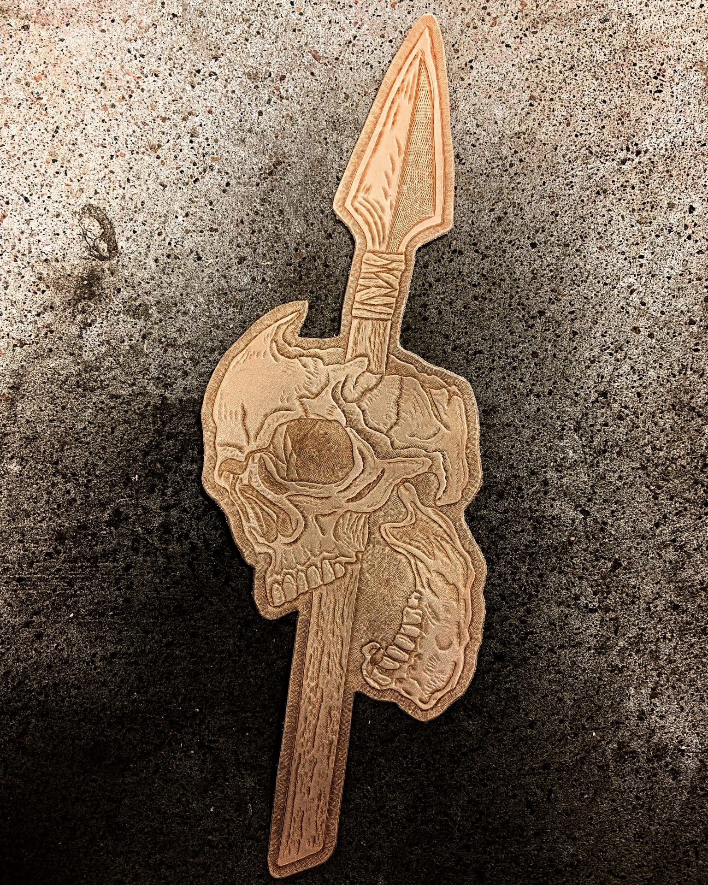

Gungnir Leather - это мастерская по изготовлению авторских изделий из натуральной кожи, основана в 2021 году в Санкт-Петербурге.
Главная концепция мастерской - это создание уникальных изделий как в классическом стиле так и кастомных с использованием техники ручного тиснения,
которые сочетали бы в себе натуральную кожу от лучших зарубежных фабрик, авторскую фурнитуру и уникальный дизайн.
За несколько лет работы мастерской было выполнено более 300 индивидуальных заказов, а на одно изделие может уходить до 20 часов рабочего времени.
Каждое изделие изготавливается полностью вручную начиная с раскроя шкуры и заканчивая сшиванием.
Использование первоклассных материалов и ручной работы позволяет добиться высочайшего качества,
за счет этого изделия сохраняют свой внешний вид и функционал десятилетия.
Делая заказ у нас вы можете быть уверенны в результате, так как накопленный опыт и мастерство позволяет создавать качественные и долговечные изделия.
Для новых клиентов предоставляется скидка в размере 10% на первый заказ
Представленные изделия являются примерами работ.
Возможно повторение понравившегося вам изделия или изготовление подобного, но с учетом ваших пожеланий,
например: изображение, выбраного вами, рисунка, окрашивание в различные цвета, использование нити или краски для торцов любого цвета.
Если вы не увидели нужного вам изделия - свяжитесь с нами, мы сами разрабатываем дизайн и выкройки для своих изделий, поэтому можем сделать все, что вам нужно.
Пишите, задавайте вопросы с удовольствием на них ответим. Постепенно будут появляться новые товары.
